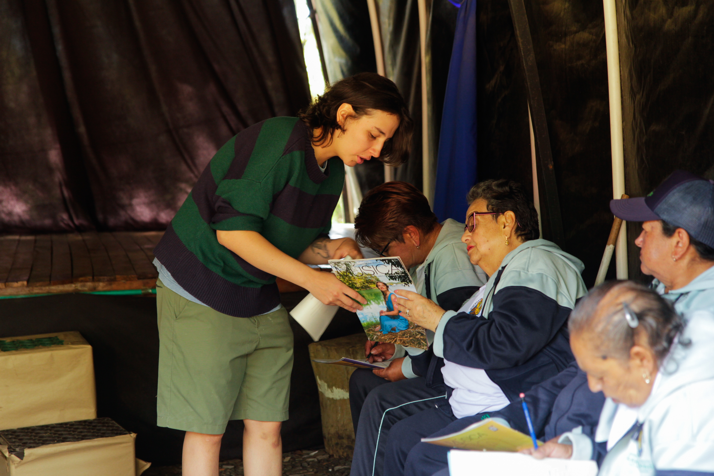
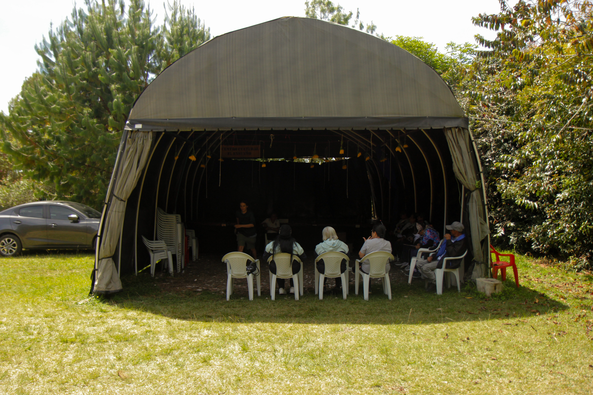

Capítulo 01 · El cuerpo cuenta
Semillero de Teatro
Dramaturgia autoficcional con adultas y adultos mayores
En el corregimiento de Ovejas, la memoria encuentra un escenario y el cuerpo, una nueva manera de contar. El Semillero de Teatro del Centro Cultural El Ensueño es un espacio de encuentro y creación para las adultas y los adultos mayores: una casa cálida donde las historias de la vida cotidiana pueden tomar la palabra.
A través de la expresión corporal, el juego dramático y la tradición oral, cada encuentro aviva la creatividad e invita a jugar. Un gesto abre una puerta; una voz trae de regreso un camino conocido. Entre risas, escucha y movimiento, vamos tejiendo los lazos que nos hacen comunidad.
En cada sesión, el teatro nos acerca a las historias personales y colectivas de nuestro territorio. Los recuerdos, las vivencias y los saberes de Ovejas se vuelven materia de creación: pasan de la conversación al gesto, de la memoria a la escena, hasta encontrar una forma propia de compartir lo vivido.
El Ensueño es también un lugar para habitar el presente. Aquí, el cuerpo, la voz y la imaginación se ponen al servicio de la memoria y la cultura local; cada persona trae consigo una historia y, al encontrarse con las demás, abre la posibilidad de escribir un nuevo capítulo.
La memoria levanta el telón.
La vida vuelve a contarse.
Álbum fotográfico Semillero de Teatro
Pequeñas páginas de nuestra memoria compartida. Cada fotografía, una invitación a imaginar.

Microrelato · 01
Una puerta en el aire
Bastó un gesto para dibujar una puerta. Alguien la abrió y dejó pasar un recuerdo. Cuando quisieron darse cuenta, la escena tenía el tamaño de un pueblo.

Microrelato · 02
Lo que guarda la voz
Había guardado aquella historia durante años. Una tarde le prestó su voz y la dejó caminar entre los demás. Cuando volvió a contarla, ya tenía compañía.


Microrelato · 03
La edad del juego
El juego preguntó quién quería empezar. Alguien dio un paso y una risa le salió al encuentro. Por un instante, el tiempo olvidó llevar la cuenta.


Microrelato · 04
Una casa entre todos
Uno trajo una palabra; otra, el recuerdo de un camino. Fueron poniéndolos en medio, con cuidado. Al terminar el encuentro, habían levantado una casa a la que todos podían volver.
Toca una fotografía y descubre su microrelato.